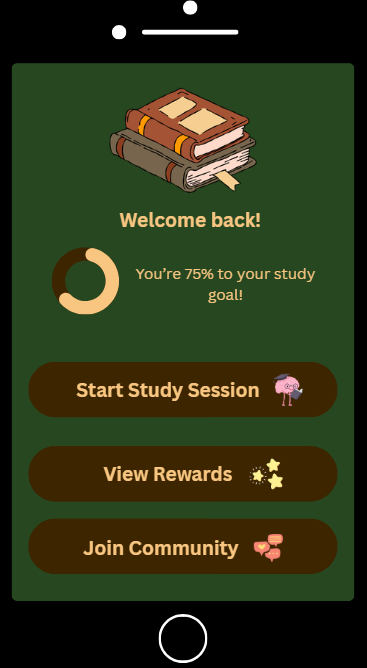
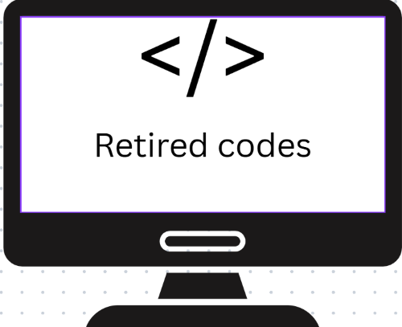

Problem Statement

Many college students struggle to stay motivated during the semester while trying to balance classes, work, and personal life. This project explores ways to help students stay on track and feel encouraged, providing a clear understanding of the challenges they face and possible solutions to improve motivation and focus.
Affinity Diagram

This diagram organizes ideas for a student motivation app into six main clusters: Product Ideas, Social Media Engagement, Long-Term Support, Platform Type, Hurdles, and Incentives. It helps visualize possible solutions and challenges, making it easier to plan the app and understand how it could support students in staying motivated throughout the semester.
Sketches
These sketches show the main ideas for my motivation app. The first screen tracks progress and goals, the second connects students with “motivation buddies” to study together, and the third turns staying motivated into a game with points and challenges. Each design helps students stay focused and encouraged throughout the semester while making the experience fun and interactive.
Resume (PDF)
.png)
This is my updated resume highlighting my education, work experience, and skills. You can view it online or download the PDF to see a full breakdown of my projects, experience, and abilities. It’s designed to give a quick overview of what I’ve done and what I can bring to future projects or opportunities.
Algorithmic Design Final Project
CSCE 190 projects and portfolio showcasing my web development skills, design work, and project documentation.